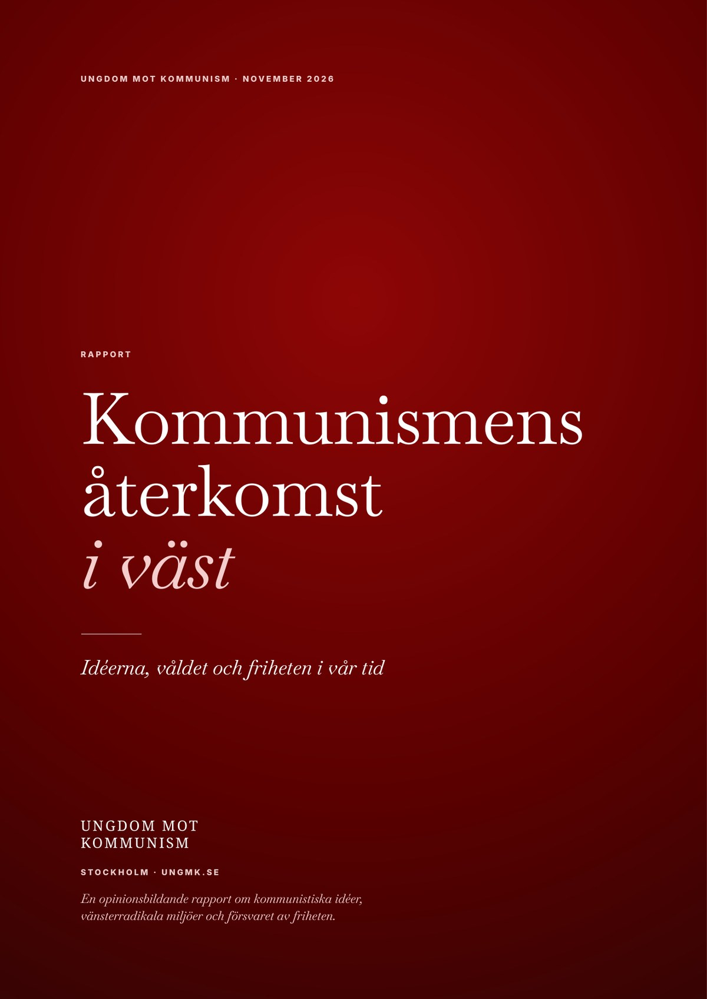

Rapport · november 2026
Kommunismens återkomst i väst
Idéerna, våldet och friheten i vår tid
Kommunismen presenteras på nytt som ett löfte, revolutionära partiprogram lever vidare, och delar av den radikala vänstern har ett betydande stöd bland unga. Samtidigt fortsätter kommunistiska partistater att begränsa människors frihet. Den här rapporten undersöker dessa företeelser och den politiska brottslighet som finns i vissa vänsterradikala miljöer, samt Sveriges förhållande till demokratiska Taiwan. 33 sidor.